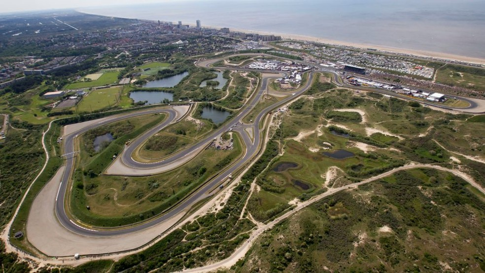
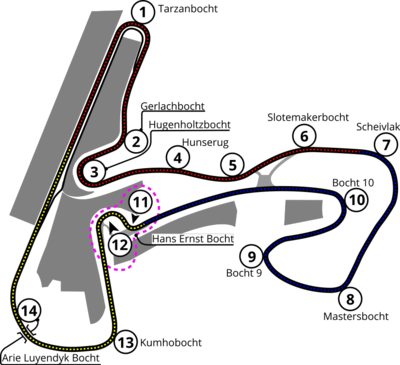

NAVEGUE
Home
Pilotos
Calendário/Tabela
Grand Prix
Construtoras
Últimas Notícias
GP da Holanda
SOBRE
A pista da Holanda, também conhecida como Circuito de Zandvoort, é um circuito de corrida localizado na cidade de Zandvoort, na Holanda. Foi inaugurada em 1948 e tem 4,259 km de extensão, com 14 curvas. A pista é conhecida por suas curvas desafiadoras e por ser uma das mais estreitas do calendário da Fórmula 1, o que a torna ainda mais emocionante para os pilotos e para os fãs. Além disso, a pista tem uma das curvas mais famosas da Fórmula 1, a "Tarzan", que é uma curva de baixa velocidade que leva a uma reta longa. A primeira corrida da Fórmula 1 na pista da Holanda aconteceu em 1952, e a pista ficou fora do calendário da categoria por muitos anos antes de retornar em 2021.
Circuitos Utilizados
Zandvoort

INFORMAÇÕES DA CORRIDA

Localização
Zandvoort, Holanda
Voltas
72
Percurso
4.252 km
Total
297.640 km
Curvas
14
Pole
Max Verstappen
Anos Disputados
36
Última Disputa
2022
Maior vencedor
Jim Clark
Última Corrida - Pódio
Max Verstappen